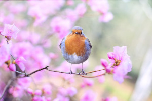
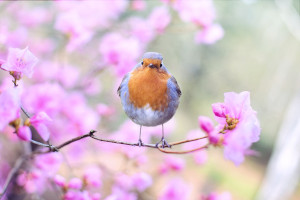

Foi um compositor e músico italiano. Seu concerto "As Quatro Estações", para violino e orquestra, é a mais popular de suas composições. Além de importante compositor de óperas, também foi regente, cenógrafo e empresário. Vivaldi faz parte da galeria dos mestres da música universal.
„Se você não gosta disso, eu vou parar de escrever música.“ ~Antonio Vivaldi